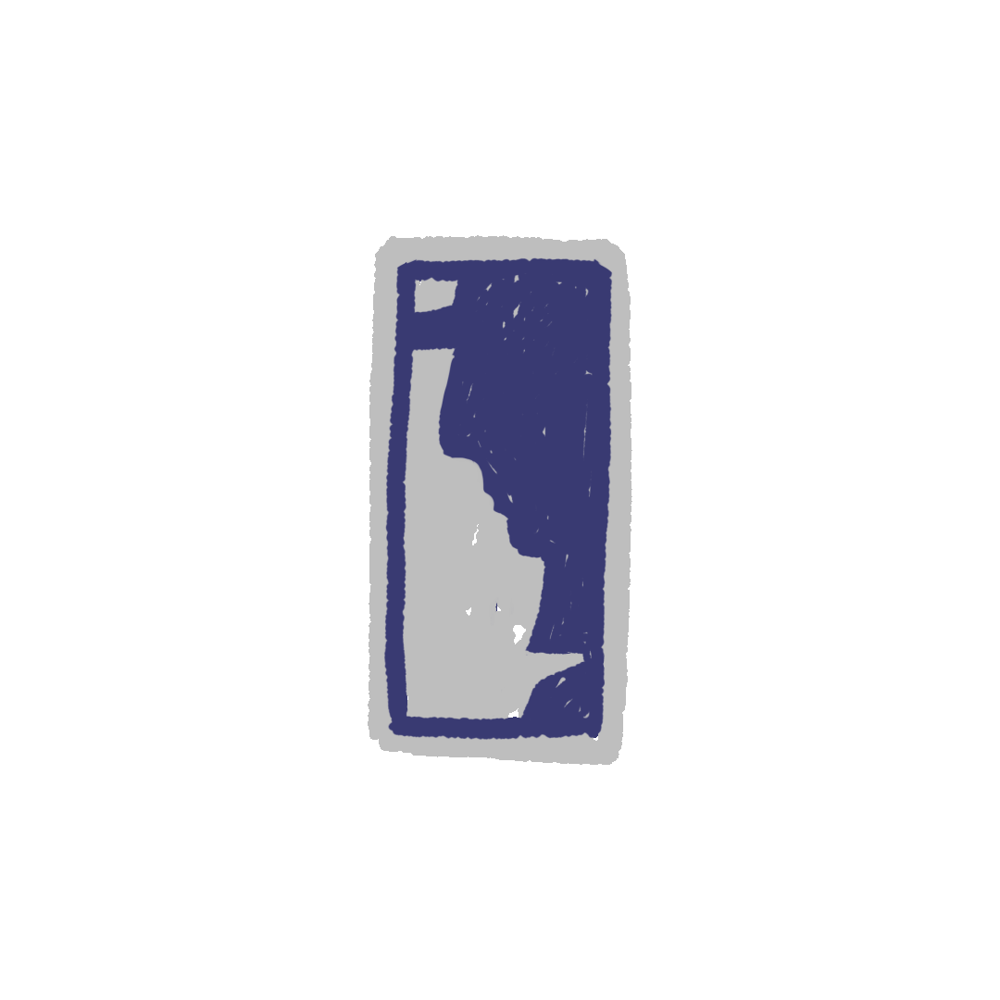

DVOSTRUKO
Oko podne i oko dvanaest našao sam se i popeo na platformu i na zadnju terasu jednog autobusa i jednog automobila za prevoz putnika koji je bio popunjen i krcat na liniji S, koja vodi od Kontreskarpa do Šamperea. Tada videh i spazih jednog mladića i jednog momka dosta smešnog i prilično grotesknog: vrat dug i izdužena šija, traka i pantljika oko šešira i klobuka. Posle meteža i gužve on reče i prosikta glasom i tonom plačljivim i bolećivim da ga njegov sused i saputnik namerno i iz inata gurka i udara kada putnici silaze i izlaze. Izgovorivši i rekavši ovo, on se uputi i krenu prema jednom slobodnom i nezauzetom mestu i sedištu. Dva sata kasnije i sto dvadeset minuta zatim ponovo ga opet sretoh i spazih kod Kur de Roma i ispred stanice Sen Lazar. Nalazi se sa i u društvu s jednim prijateljem i drugom koji mu savetuje i koji ga upućuje da bi trebalo da doda i prišije jedno dugme i jedno puce na svoj kaput i gunj.
